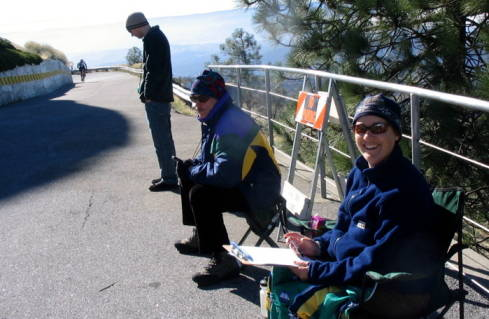

Week 7 Results: Mt Hamilton
23 Nov 2006
|
2006 Low-Key Hillclimbs Week 7 Results: Mt Hamilton 23 Nov 2006 |
|  |
| Penny Hutchinson and the rest of the Hamilton finishing crew photo by Dan Connelly |
The sun rose above the Eastern horizon, shining upon the land on Thanksgiving morning... and all around, the people stirred from their slumbers. The rains of the night before were gone; the strengthening light was brilliant through the brisk late November air. It was time to arise! Time to climb!
This, the final climb of the 2006 Low-Key Hillclimb series, was where it all was to come together, where all would be resolved, where the final points, the true points, would be set.
And so they were. In the men's category, multi-time-LowKey-champion Tracy Colwell of team Team Colwell completed his late-series charge, reaching the Hamilton summit first, in a solid time of 74:53, to take the lead in the men's standings (and to score the highest overall score of any man or women).
Among the women, Anny Henry of EMC2/Vellum led Cheryl Hennessy of Velo Bella in a close finish at the observatory. But Cheryl Hennessy had more than enough to lock up her solid lead in the women's overall. Shannon Bankosh finished third at Hamilton.
In the all-important team competition, it was San Jose Bike Club posting the top score of the day, finishing ahead of AV: Old Guys Finish and Webcor/Alto Velo. Fourth-place Western Wheelers still managed to pull off the upset, however, taking the overall ranking for the series. Led by James Porter, Western Wheelers had an excellent series, showing the "racers" how it's done.
In the endurance competition, Adam Tow withstood a late charge from unicyclist Nathan Hoover to take the coveted top position. Adam, who has been arriving at finish lines a lot fresher than most, seems unlikely to repeat in 2007.
The most impressive ride on the day, however, was no doubt the side-by-side finish of Nathan and Beau Hoover, riding unicycles.... 19 miles, 4200 feet, on one wheel each. Amazing. 14-year-old Beau has been the youngest regular in this year's series, but has finished each of his climbs strongly, taking the overall in the unicyclist competition, as well as the fixed-gear competition, in addition to the 16 and under competition. Nicely done!!!!
And so, the Low-Key series comes to an end for 2006. Next up, the all-important Awards Ceremony on 5 Dec @ 7pm (location: check back to this website!). Then, we hope many of you will be able to participate in the San Bruno Hillclimb on the New Year, run by our buddies at Pen Velo.
Thanks to coordinator Judy Colwell, with help from Brenda Brunner, Fred Butts, Bernadette Corneau, Sheri Greenspan, Penny Hutchinson, Leo Menestrina, and Ian Sowden for making today's climb possible!median time = 93:41
pl # rider team category time score 1 51 Tracy Colwell Team Colwell 2 74:53 125.11 2 171 Nathan Parks EMC2/Vellum 35+ 75:15 124.50 3 31 Patrick Gordis Grizzly Peak Cyclists 40+ 75:53 123.46 4 83 Kieran Sherlock AV: Old Guys Finish Open 76:20 122.73 5 39 Clark Foy San Jose Bike Club 40+ 76:46 122.04 6 45 Rupert Brauch WAV-ARA 3 77:43 120.54 7 62 Daryl Spano San Jose Bike Club 40+ 78:26 119.44 8 37 Bill Lloyd Le Matin 1 79:13 118.26 9 48 David Kelly Webcor/Alto Velo 4 79:25 117.96 10 20 James Porter Western Wheelers Out Of Shape Dads 80:05 116.98 11 1 Dan Connelly TNT 3 80:06 116.96 12 158 Charles Pockell-Wilson Equipe Mood Retro 40+ 80:20 116.62 13 148 Dan Brehmer Organic Athlete 40+ 82:35 113.44 14 167 Kevin Merritt AV: Old Guys Finish 45+ 83:25 112.31 15 36 Bill Davis Webcor/Alto Velo 4 83:43 111.91 16 176 Dave Rossow Webcor/Alto Velo 35+ 83:48 111.79 17 122 Michael Gonia Western Wheelers 40+ 85:10 110.00 18 157 Tim Lewis San Jose Bike Club 35+ 85:19 109.81 19 88 Peter Tapscott AV: Old Guys Finish 50+ 85:24 109.70 20 155 Erik Best 4 85:45 109.25 21 165 Allen Wulczynski San Jose Bike Club 40+ 86:12 108.68 22 124 Jeff Farnsworth Western Wheelers 40+ 87:28 107.11 23 175 Jared Jacobs Webcor/Alto Velo 25-29 89:53 104.23 24 35 Ron Brunner Commuter Commuter 90:03 104.03 25 85 Chris Soukup San Jose Bike Club 35+ 90:14 103.82 26 162 David Stockwell San Jose Bike Club 50+ 90:24 103.63 27 174 Keith Jordan Fremont Freewheelers 30+ 90:30 103.52 28 40 Geo Kitta Pen Velo/Kondra 50+ 90:43 103.27 29 18 Jeff Loufit 45+ 90:56 103.02 30 160 Andrew Lee Used to Ride 35+ 91:08 102.80 31 4 Fred E. Stamm Pen Velo/Kondra 50+ 93:41 100.00 32 21 Pete Heller AV: Old Guys Finish 50+ 94:15 99.40 33 170 Vladimir Sayno San Jose Bike Club 30+ 94:17 99.36 34 67 Martin Hyland Western Wheelers 50+ 94:58 98.65 35 173 Craig Boyce Webcor/Alto Velo 35+ 95:46 97.82 36 2 Kevin Winterfield Low-Key 96:34 97.01 37 156 Eric Murray Webcor/Alto Velo 45+ 96:53 96.70 38 168 Stu Maclennon San Jose Bike Club 35+ 97:24 96.18 39 151 Ted Burns Webcor/Alto Velo 30+ 98:56 94.69 40 166 Todd Manley San Jose Bike Club 6'9" 99:00 94.63 41 9 Ken Straub Team Bikeaholics Older Than You 99:05 94.55 42 169 Andy Wissink VSRT 35+ 101:06 92.66 43 86 Alex Matthews No Team Cotter Pin 101:13 92.56 44 19 Menso de Jong Santa Cruz Syndicate Junior 101:30 92.30 45 119 J.L. de Jong Meno's Dad Beginner 102:06 91.76 46 179 Erik Powell 102:52 91.07 47 172 Robert Werner Webcor/Alto Velo 30+ 103:40 90.37 48 163 Greg Zubick 40+ 104:10 89.94 49 164 David Knight San Jose Bike Club 30+ 104:19 89.81 50 34 Stephen Fong San Jose Bike Club 5 106:33 87.92 51 73 Barry Burr Men with Guts 45+ 107:16 87.34 52 153 Neil Waters Junior 107:24 87.23 53 177 Dan Stober Western Wheelers 55+ 108:41 86.20 54 178 John Mitchell Western Wheelers 50+ 108:41 86.20 55 10 Dick Robinson TNT 59+ 123:00 76.17 56 49 Adam Tow Blubber Busters Infinity 128:40 72.81 57 89 JT Conklin Identity Engines 35+ 129:10 72.53 58 41 Kwan Low The Cutters 5 134:59 69.40 59 161 Tim Lee Used to Ride 35+ Mtb 136:09 68.81 60 91 Beau Hoover Team Cyclops Unicycle 152:02 61.62 61 60 Nathan Hoover Team Cyclops Unicycle 152:02 61.62
median time = 113:26
pl # rider team category time score 1 154 Anny Henry EMC2/Vellum 30+ 101:40 111.57 2 7 Cheryl Hennessy Velo Bella 35+ 101:41 111.56 3 139 Shannon Bankosh San Jose Bike Club 5 109:57 103.17 4 5 Ingrid Erkman TNT OOSOL 113:26 100.00 5 95 Kelly Kasik 123:25 91.91 6 71 Marie Borselle Velo Girls 40+ 130:56 86.63 7 111 Pat Parseghian Western Wheelers 50+ 139:15 81.46
pl team score scoring 1 San Jose Bike Club 351.29 (Clark Foy, Daryl Spano, Tim Lewis) 2 AV: Old Guys Finish 344.74 (Kieran Sherlock, Kevin Merritt, Peter Tapscott) 3 Webcor/Alto Velo 341.66 (David Kelly, Bill Davis, Dave Rossow) 4 Western Wheelers 334.09 (James Porter, Michael Gonia, Jeff Farnsworth) 5 TNT 293.12 (Dan Connelly, Ingrid Erkman, Dick Robinson) 6 EMC2/Vellum 236.07 (Nathan Parks, Anny Henry) 7 Pen Velo/Kondra 203.27 (Geo Kitta, Fred E. Stamm) 8 Used to Ride 171.61 (Andrew Lee, Tim Lee) 9 Team Colwell 125.11 (Tracy Colwell) 10 Grizzly Peak Cyclists 123.46 (Patrick Gordis) 11 Team Cyclops 123.24 (Beau Hoover, Nathan Hoover) 12 WAV-ARA 120.54 (Rupert Brauch) 13 Le Matin 118.26 (Bill Lloyd) 14 Equipe Mood Retro 116.62 (Charles Pockell-Wilson) 15 Organic Athlete 113.44 (Dan Brehmer) 16 Velo Bella 111.56 (Cheryl Hennessy) 17 Commuter 104.03 (Ron Brunner) 18 Fremont Freewheelers 103.52 (Keith Jordan) 19 Low-Key 97.01 (Kevin Winterfield) 20 Team Bikeaholics 94.55 (Ken Straub) 21 VSRT 92.66 (Andy Wissink) 22 No Team 92.56 (Alex Matthews) 23 Santa Cruz Syndicate 92.30 (Menso de Jong) 24 Meno's Dad 91.76 (J.L. de Jong) 25 Men with Guts 87.34 (Barry Burr) 26 Velo Girls 86.63 (Marie Borselle) 27 Blubber Busters 72.81 (Adam Tow) 28 Identity Engines 72.53 (JT Conklin) 29 The Cutters 69.40 (Kwan Low)